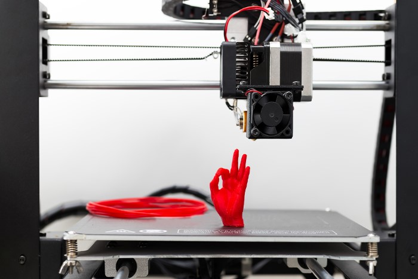

Anna Worsley is a formulation scientist currently working for FabRx, a specialist biotech start-up focused on developing 3D printing technology for personalised pharmaceuticals and medical devices. She has been working in start-ups for the last few years after getting her PhD in Biomaterials from UCL.
In this edited conversation with Peter Green, Anna spoke about her journey so far, perspective on start-ups and biomaterials.
What's your current role at FabRx?
My role coming into the company was formulation scientist or senior scientist. Put very simply, I'll get a drug and mix it into different materials to create a cartridge or filament for 3D printing. Then, the team has to test the product to make sure that the drug is still active after 3D printing. Despite being a scientist, since coming into the company I've been involved in many other roles due to the nature of working in a start-up.

What was your motivation behind joining a start-up?
I was quite keen on working somewhere where you get more involved in company creation. As I mentioned, I've currently got multiple roles in the start-up and I really love that.
I saw that you went through the med-tech super connector accelerator recently, how was that?
It was great. I managed to use it to fund a continuation of my PhD project. I organized another animal trial for the project with my old team and now we are waiting back for the results.

Since then you spent some time at Notpla- a bioplastic company using seaweed as a raw material. What's your perspective on this industry?
There's no doubt that seaweed is a useful material which will create useful products. There are more and more projects in this space which is exciting. On the other hand, in my experience there are a lot of projects which are driven more by hype than utility. We have to be wary of that.
For companies like Notpla there is a lot of potential upside. Biodegradability policies created by the EU have created a competitive advantage for some start-ups like Notpla. It shows the role regulation has to play in these early stages of an industry.
What are some of the biggest challenges that you've experienced on your journey so far in science and start-ups?
One challenge is fundraising. Regulation is another. It can be such a minefield. Of course regulation is extremely important but sometimes it can be difficult to navigate.
Interviewer: Peter Green